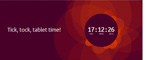

- C'est terminé pour la Creative Suite d'Adobe. Elle part s'installer dans les nuages et change de nom. Comme il fallait s'y attendre, voici donc la Creative Cloud, désormais accessible uniquement en ligne et sous abonnement. Au passage, Fireworks se retrouve six pieds sous terre. À lire sur le site officiel.
- Voici qu'est annoncée une nouvelle solution de création d'apps sans avoir à écrire une seule ligne de code. Il s'agit du service en ligne AppArchitect (encore en bêta). Vous pourrez créer et diffuser votre application native via un navigateur internet à coup de clics et de glisser/déposer. À lire sur le site de Macg.co.
- Une nouvelle solution pour la création de magazines arrivera dans le courant de l'été. Prss sera un outil de publication situé dans les nuages. Mais à la différence des outils similaires, il sera gratuit et utilisable par tout un chacun. À lire sur le site de Vipad.
- L'agrégateur de fils d'actualités Flipboard change de version et permet désormais de publier son propre magazine. C'est une solution à mi-chemin entre la curation de contenu et les réseaux sociaux. Un outil qui va rendre les flux rss plus accessibles et plus attrayants. À lire sur le site de Clubic.
- À l'occasion de la première conférence européenne de l'IDPF (International Digital Publishing Forum), Bill Mc Coy, son président, a fait deux annonces importantes concernant Readium. Le projet prend de l'ampleur. Au départ simple lecteur open source en ligne de ebook, il se voit renforcé par la création d'une Readium Foundation et par la mise à disposition d'un kit de developpement. La voie open source du format ePub3 se poursuit. À lire en anglais sur le site de l'IDPF.
- Un accord a été signé entre l’État, les partenaires sociaux et l’Afdas pour aider la presse à faire face aux mutations technologiques. Cela inclut, entre autres, l'accès a une plate-forme e-learning gratuite pour tous les salariés de la presse. À lire sur le site de l'AFDAS.
- Passer du papier à l'ordinateur, est un sacré défi quand il s'agit de la bibliothèque apostolique du Vatican, car ce ne sont pas moins de 40 millions de pages qu'il faudra numériser et archiver. Emc, le géant mondial du stockage de données a annoncé le 7 mars dernier sa participation active au projet. À lire sur le site de silicon.fr.
- L'association internationale des éditeurs vient d'adopter le format ePUB3 comme standard mondial de publication. Elle détaille dans son communiqué de presse les raisons de ce choix (ouverture et interopérabilité en tête). Lire le communiqué en anglais.
- Après Amazon, c'est au tour d'Apple de déposer cette semaine un brevet autour d'un système de revente de fichiers numériques d'occasion. Voilà une nouvelle qui relance le débat sur les DRM dans les ebook. À lire sur lafeuille.blog.lemonde.fr.
- "Au terme de plusieurs mois de négociation, le Conseil permanent des écrivains (CPE) et le Syndicat national de l'édition (SNE) se sont entendus sur les termes d’un accord, qui pose non seulement les principes nouveaux de l'exploitation du livre sous forme numérique, mais modifie également en profondeur plusieurs dispositions essentielles propres au livre imprimé". Lire l'intégralité du communiqué sur le site du ministère de la culture.
- Au salon du livre de Paris se tiendra également la dixième édition des assises du livre numérique, l'occasion de se faire une idée sur les usages et les perspectives de l'édition numérique. Découvrez le programme de cette journée du 22 mars sur le site du salon du livre de Paris.
 - Fin du compte à rebours sur le site d'Ubuntu « Tick, tock, tablet time ! ». Un mois après les smartphones c'est au tour des tablettes. Le système d'exploitation libre Ubuntu peut désormais s’installer aussi bien sur un PC, un smartphone ou une tablette. Un système unique dont l'interface s’adapte ensuite à son environnement. À lire sur le site d'Ubuntuser.
- Quark cherche à retrouver sa place et se pose en challenger pour la publication numérique. La société organise une tournée mondiale de présentation autour de sa solution AppStudio. Vous y découvrirez pourquoi le numérique est l’avenir de la publication, la différence entre les apps et les livres électroniques, les coûts associés à la création et la publication d’apps, pourquoi les créatifs doivent aller au-delà de la création statique des PDF et comment créer des apps basées sur HTML5 avec XPress ou InDesign. Inscription gratuite sur le site pour la présentation du 27 mars à Paris.
- Voilà l'occasion de découvrir la publication numérique avec Quark Xpress 9.
La société propose gratuitement un séminaire en ligne ce jeudi 31 janvier. Le thème étant "publication numérique : repères et astuces pour bien débuter. S'inscrire sur le site de Quark.
- AppStudio, la nouvelle solution de publication HTML5 de Quark qui transforme les contenus papier en expériences numériques interactives et qui fonctionne aussi bien avec QuarkXPress qu'Adobe InDesign, est disponible en ligne. À découvrir sur le site appstudio.net.
- Dans le cadre de la 6e édition de La Presse au Futur, s'est déroulée la cérémonie des Trophées de l'Innovation Presse qui a récompensé huit lauréats parmi lesquels figurent entre autres Les Inrockuptibles, Closer, GQ ou encore France Culture Papier. À suivre sur la page facebook.
- PadCMS est un Système de Gestion de contenu Open Source développé par la société française Adyax. Cet outil prometteur permet de réaliser tout type d'applications sur tablettes, avec une forte spécialisation sur les "rich magazines". A lire en anglais sur le site.
- Les résultats de la deuxième vague du Baromètre SOFIA/SNE/SGDL sur les usages du livre numérique en France ont été publiés lors des 9e Assises du livre numérique du SNE. Télécharger le communiqué et la présentation sur le site.
- Apple Ibooks Author passe en version 2.0 avec le format portrait, l'incorporation des polices et de nouveaux modèles, entre autres nouveautés. A lire sur le site d'Apple.
- BlueGriffon epubEdition est disponible au téléchargement. Il s'agit d'un logiciel WYYSIWYG pour créer des fichiers epub lisibles sur n'importe quelle liseuse. A lire en anglais sur le site.
- Aquafadas, la société montpelliéraine, éditeur d'outils de Digital Publishing, est rachetée par le canadien Kobo, fabricant de liseuses électroniques. A lire sur Mac4ever.
- Quark DesignPad est une app iPad exclusive qui met la conception graphique à portée de mains. Un outil pour faire une pré-maquette PAO à la volée, depuis son ipad. A lire sur le site.
- MacTex devient compatible Mountain Lion. Pour rappel, il s'agit d'un logiciel de composition de documents largement utilisé par les scientifiques, particulièrement en mathématiques, physique, astronomie et informatique, des domaines où la rédaction de formules est le lot quotidien. A lire sur cuk.ch.